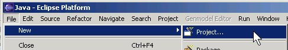
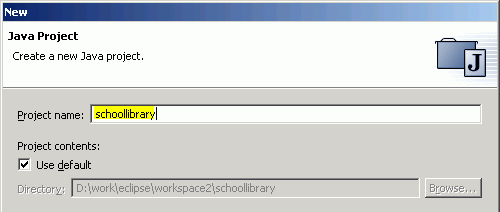
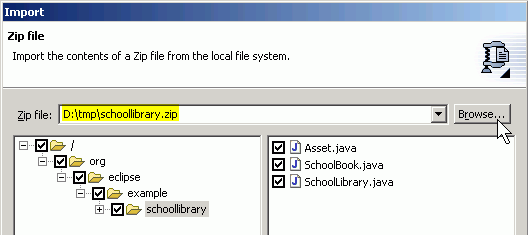
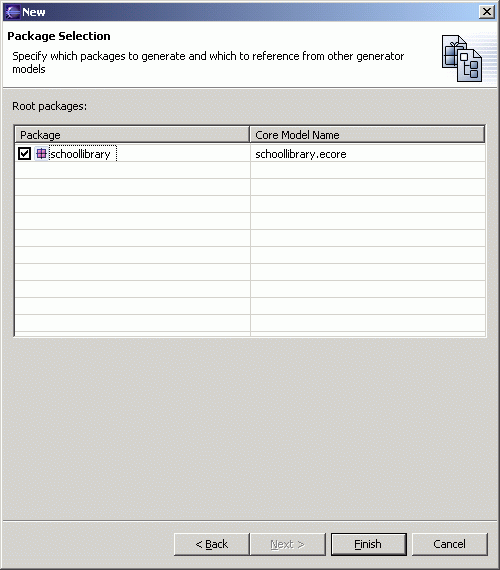

Create a Java Project
-
Select "File/New/Project..." to bring up the New Project dialog:

-
Select "Java" and then "Java Project". Click the "Next" button.

- Give the project a name, for example "schoollibrary", and click the "Next" button.

- Select "Add Folder...", click on
the "Create New Folder..." button, and enter "src" as the name of the source
folder. You'll be prompted to update the Build ouptut folder, click "Yes".

- Change the Default output folder to "schoollibrary/runtime".

- Select the "Projects" tab and select the "library" project as a dependent project.

- Click the "Finish" button and the "schoollibrary" project should appear in the Package Explorer view.

Import the Interfaces
You can create and type in the interfaces as in the previous tutorial, but we will show here how to import them from the zip file schoollibrary.zip.-
Save the above zip file in a directory on your workstation, say "d:\tmp".
-
Bring up the Import dialog, by selecting "File/Import..."

- Select "Zip file". Click the "Next" button.

- Type in the zip file name or use the "Browse" button to bring up a dialog to locate
the zip file. You can then expand the directory tree and select the individual
files in the zip file to import. Select all the files (3) available.

- In
the destination folder input field, type in "schoollibrary/src" or locate
it using the "Browse" button. Click the "Finish" button.

- Expand the "schoollibrary" project and you will see that the interface
files were imported. It shows errors because the "library" project it depends
on has been fully generated and it requires the EMF package in the Java Build Path
to properly compile the interfaces. Do not worry about the errors right now.
Once the EMF model is generated, the proper dependencies will be set up and
these errors will disappear.

Create the Gen(erate) Model
- With the "schoollibrary" project selected, select "File/New/Other..."

-
Select "Eclipse Modeling Framework" on the left and "EMF Models" on the right. Click the "Next" button.

- Enter "schoollibrary/src/model" as the name of the folder where
the genmodel will be generated and change the .genmodel name to "schoollibrary.genmodel".
(This folder name and file name are used so that the GenModel is generated
in the same place as in the other method using a Rose model.) Click the "Next"
button.

- Select "Load from Java annotations". Click the "Next" button.

- Select schoollibrary package. Click the "Finish" button.

-
An Ecore model and a GenModel will be created. The GenModel, which
controls code generation for the model, is opened in the main view.